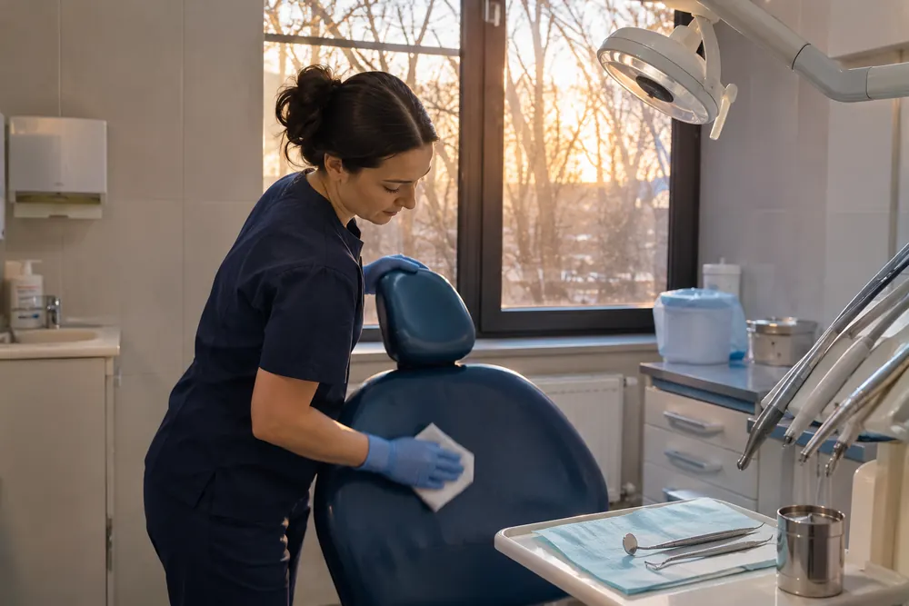

Экономика стоматологии: из чего складываются выручка и прибыль
На вопрос «сколько зарабатывают стоматологии» нет одной цифры: кабинет на одно кресло в небольшом городе и клиника имплантации в Москве живут в разной экономике. Зато формула у всех одна. Разбираем, из чего складываются выручка и прибыль стоматологии и какие рычаги есть у владельца, кроме рекламы.

Рынок стоматологии: что известно
Стоматология как бизнес остаётся одним из самых больших сегментов платной медицины в России. Оценки объёма рынка расходятся в зависимости от методики подсчёта: открытые обзоры за 2025 год называют суммы от 630 до 870 млрд ₽. Например, в обзоре DentalData, опубликованном в деловом издании Т-Банка, оборот стоматологического рынка за 2025 год оценён в 872 млрд ₽, а средний чек по стране превысил 11,2 тыс. ₽.
Авторы обзоров сходятся в двух наблюдениях, которые важны владельцу клиники:
- рынок стоматологии в деньгах растёт в основном за счёт цен, а не числа посещений;
- рост среднего чека не гарантирует роста прибыли: вместе с ним растут зарплаты врачей, аренда и стоимость материалов.
Вывод для клиники простой: рассчитывать, что рынок сам вынесет наверх, не стоит. Считать нужно свою экономику.
Из чего складывается выручка стоматологии
Выручка клиники это произведение четырёх величин.
| Величина | От чего зависит | Как влиять |
|---|---|---|
| Число кресел | Площадь, оборудование, лицензия | Меняется редко и дорого |
| Рабочие часы | График клиники и врачей | Вечерние часы и выходные, вторая смена |
| Загрузка | Сколько часов из рабочих занято приёмом | Запись, напоминания, реклама на свободных врачей |
| Выручка за час приёма | Набор услуг и цены | Доля имплантации, ортопедии, ортодонтии, прайс |
Средний чек в стоматологии удобно считать двумя способами: за визит и на пациента за год. Первый показывает, какие услуги оказывает клиника. Второй показывает, возвращаются ли пациенты и заканчивают ли лечение.
Расходы клиники
- Оплата труда. Врачи обычно получают долю от выручки, ассистенты и администраторы оклад. Это самая большая статья.
- Материалы и зуботехническая лаборатория. Растут вместе с выручкой, особенно в ортопедии и имплантации.
- Аренда и коммунальные платежи. Не зависят от загрузки.
- Оборудование. Кредит или лизинг, обслуживание, амортизация.
- Маркетинг. Реклама, сайт, площадки.
- Налоги и управление. Бухгалтерия, программы, связь, лицензионные требования.
Часть расходов постоянная: аренда и оклады идут, даже если кресло пустует. Поэтому пустой час в расписании стоит клинике дороже, чем кажется.
Прибыль и рентабельность стоматологии
Прибыль стоматологии это выручка минус все расходы. Рентабельность стоматологии показывает, какая доля выручки остаётся прибылью: прибыль делят на выручку. Считать её полезно не только по клинике в целом, но и по направлениям.
- Терапия и гигиена. Небольшой чек, много визитов, загружают расписание и приводят пациентов на другие услуги.
- Ортопедия и имплантация. Высокий чек, но большая доля материалов и лаборатории.
- Ортодонтия. Длинное лечение с оплатой по этапам, постоянные визиты.
- Детский приём. Чек ниже, зато приводит в клинику всю семью.
Сколько зарабатывают стоматологии в Москве и в регионах, сравнивать по выручке бессмысленно: в столице выше и чек, и аренда, и зарплаты. Сравнивать стоит долю прибыли в выручке.
Как увеличить прибыль стоматологической клиники
- Загрузить свободные часы. Посмотрите расписание по врачам: у кого окна и когда. Реклама и акции должны работать на этих врачей, а не на клинику в целом.
- Довести планы лечения до конца. Список пациентов, которые получили план и не начали или не закончили лечение, есть в программе клиники. Это самые дешёвые пациенты: их не нужно привлекать.
- Вернуть пациентов. Напоминание об осмотре раз в полгода.
- Сместить набор услуг. Привлекать пациентов на услуги, которые дают больше выручки за час приёма.
- Сократить потери на звонках. Если из десяти обращений записываются трое, дешевле научить администраторов, чем удвоить рекламу.
- Пересмотреть прайс. Цены, которые не менялись два года при растущих расходах, съедают прибыль незаметно.
Как увеличить выручку в клинике через работу с пациентами, подробнее разобрано в статьях о продажах в стоматологии и о воронке и показателях.
Что считать каждый месяц
- выручку по врачам и направлениям;
- загрузку кресел в часах;
- число первичных пациентов и откуда они пришли;
- средний чек за визит и на пациента;
- долю принятых планов лечения;
- расходы по статьям и прибыль.
Если этих цифр нет, первый шаг не реклама, а учёт. Реклама без него приводит пациентов, но владелец не видит, заработала ли на них клиника.
Помогаем загрузить врачей и услуги, от которых зависит выручка клиники: Комплексный маркетинг для стоматологии.